簡介
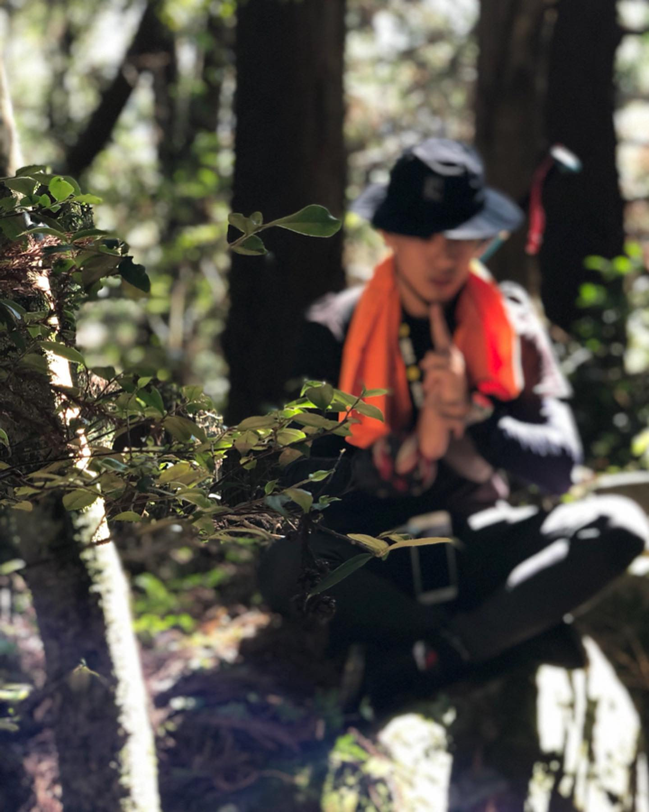- 王昱韋 8rian
- 8W
- 1994/2/28
- 攝影、料理、戶外活動
- 非常喜愛台灣這片土地，目前已經環島兩次，摩托車和步行
環島指南

出發前
- 時間(包含出發時間，總旅程時間)
- 交通方式
- 裝備
- 路線
出發後
- 住宿:如果是火車、機車、汽車方式沒有體力的問題，可以先提早規劃好住宿點，也比較方便可以安排有車位的住宿；腳踏車步行的話就建議前一天找，可根據身體狀況判斷。
- 身體:人力交通方式時隨時注意身體狀態，如果嚴重不適立即就醫或是提早休息，如果是動力交通工具，務必保持睡眠充足。
- 天氣:遇到午後雷陣雨、颱風等極端氣候建議暫停旅程，安全第一。
- 目的:替這趟旅程找一個目的，讓旅程可以更有趣。
一些紀錄
 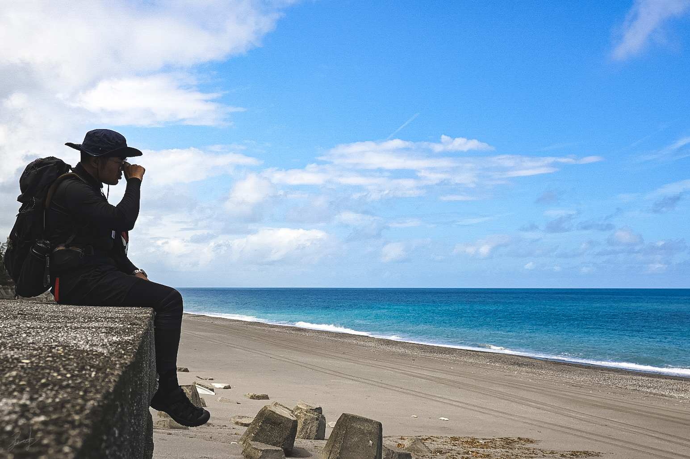
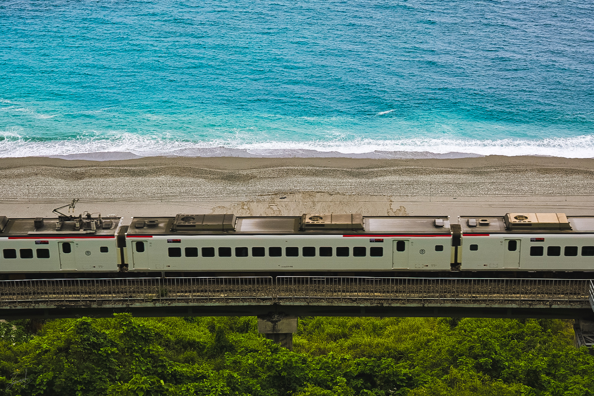
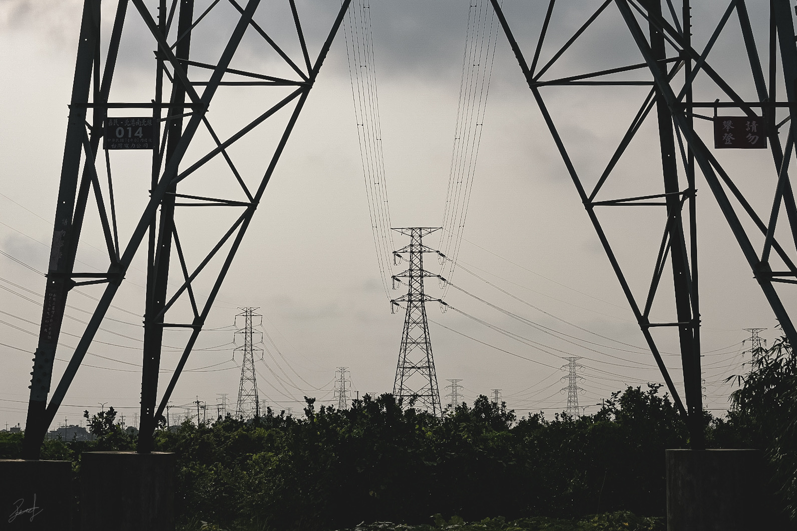
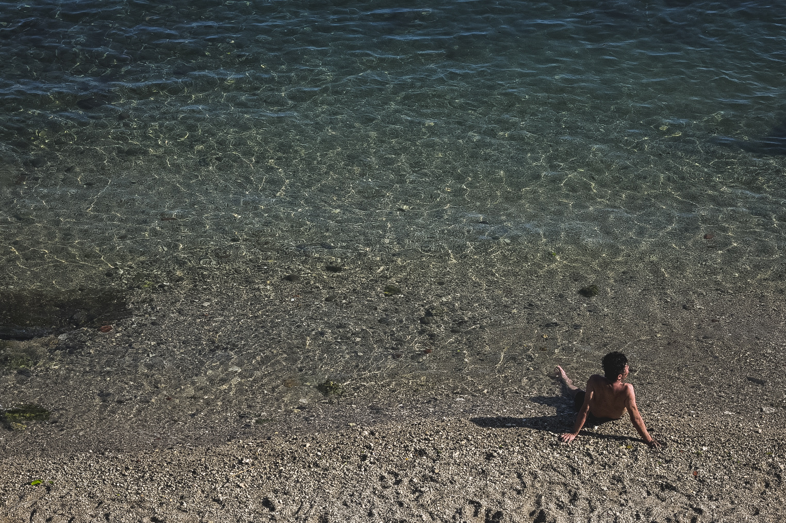
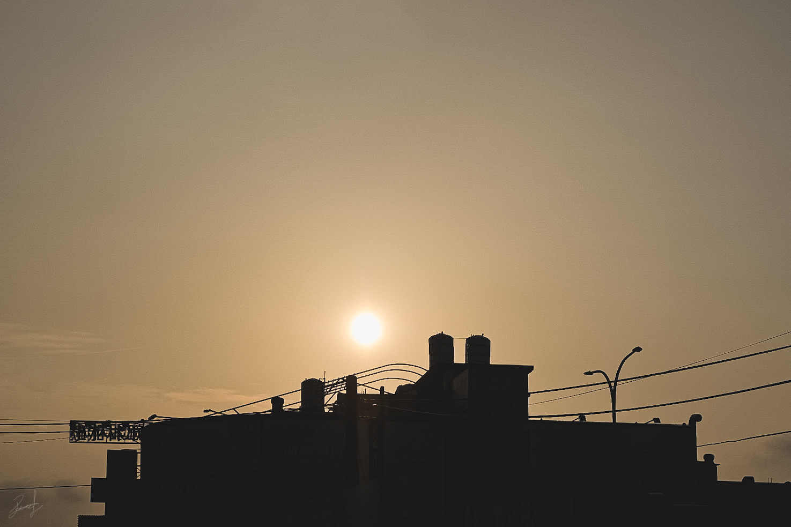
back
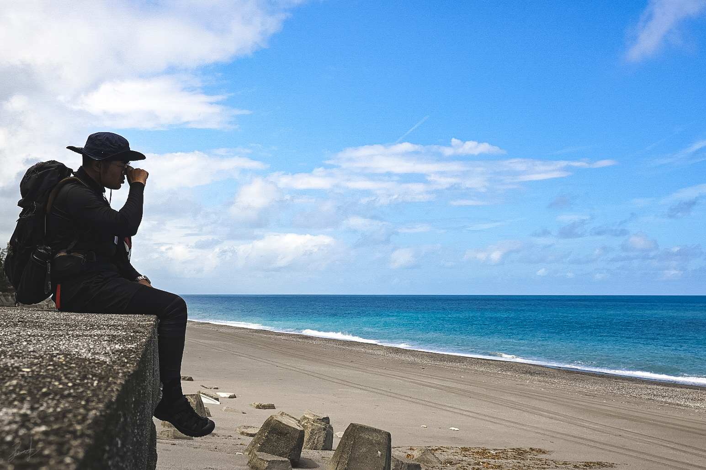
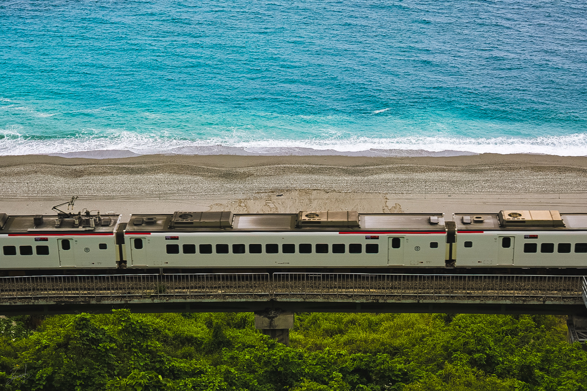
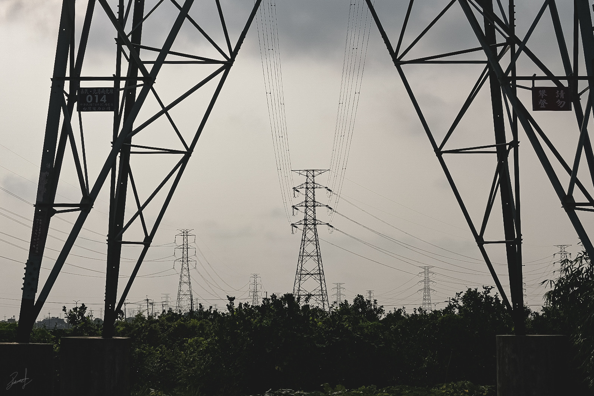
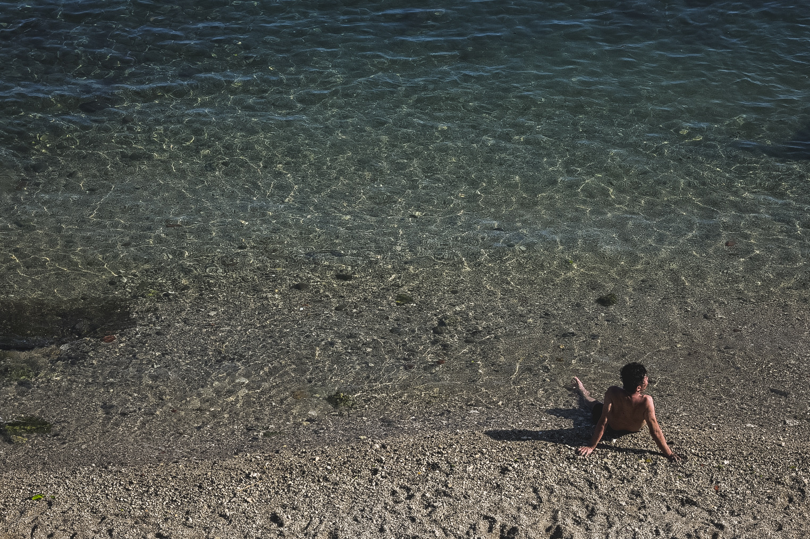
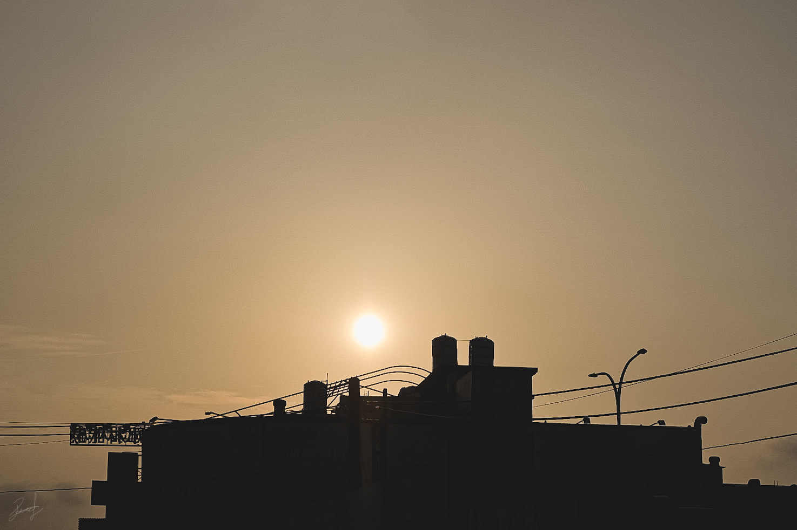
back